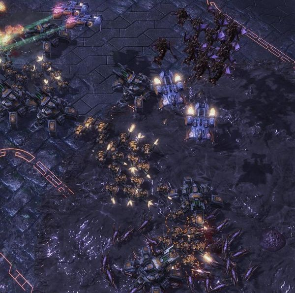
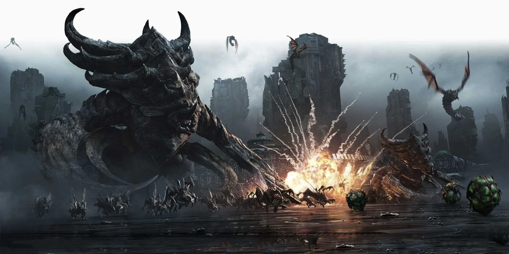

I play a a lot of video games in my free time. its fast, and can be started up faster than the preparation time with something like painting or exercising. The games that i enjoy playing are primarily strategy games. of these strategy games, there are 3 that i enjoy the most.
Starcraft 2 is one of my favorite games that i have played. It's a Real
Time Strategy game made by Blizzard in 2010, with DLC content releasing in
2013 and 2015.
In this game, you select one of 3 races to play:
The Terran's strengths depend on strong static fortresses on defense, and heavy armor supported by hordes of expendable infantry. A standard Terran marine alone cannot do very much, but they are cheap and fast to produce. they can fit in any composition and making an army solely made of marines is a completely viable option.

Even if you have never played starcraft 1 or 2, you have probably heard the term "Zerg" used at some point in another game. Zerg, much like its namesake, employ a tactic of "Everyone is expandable". Your units are, besides a few outliers, fast to produce, fast to move, and fast to die. The goal of someone playing against zerg is to contain them and prevent them from expanding out of control. If you let the Zerg player do anything they want, you are in for a drawn out battle of attrition.
Now for my favorite faction in starcraft, and possibly all of sci-fi, the Protoss. The protoss have the most advanced technology in the setting, and use it with deadly efficiency. The basic Zealot alone is durable and able to withstand heavy punishment. This is a theme which is carried throughout most of the protoss roster. This is balanced out by units being slower and more expensive to build. They also have possibly the strongest air units in the game. A common strategy of Protoss is to Construct a large amount of gateways to quickly respond to threats, and maxing out their population with a massive fleet of starships, able to tear armies to shreds under hails of laser fire.